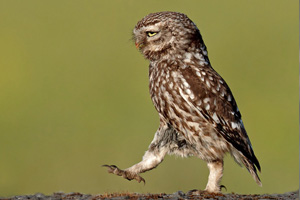

This is a simplified version of Chris Coyiers' Grunt Boilerplate based on the CSS Tricks screencast "First Moments with Grunt" which also accompanies the article "Grunt for People Who Think Things Like Grunt are Weird and Hard" written by Chris.
This is a jQuery plugin (Owl Carousel) to illustrate dependancies in JS and CSS.